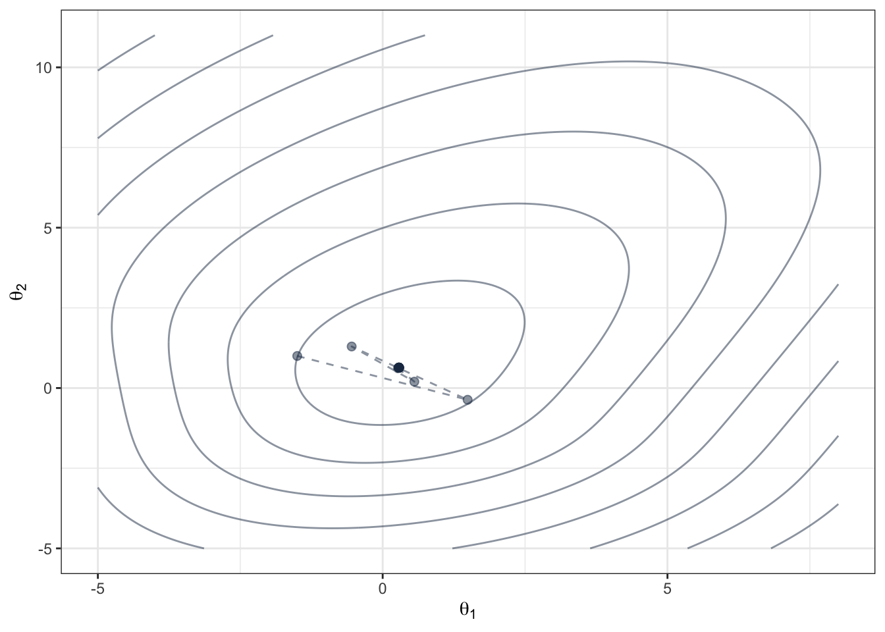

Chapter 7 エラータム
残念ながら本書（第一刷）でいくつかの誤りが見つかっている． 修正点の指摘について松野舜介氏に感謝します．
7.1 p21 例1.8の後の文章 (20200511) 第二刷修正漏れ！
事後確率の計算の直前「すなわち\(\theta>0\)」とあるのは「すなわち\(\theta>0.5\)」の誤り．
7.2 p44 例2.1について (20210308)
- 図2.4のキャプション：「パラメータ\(p=2\)の…」とあるのは「パラメータ\(\lambda=2\)の指数乱数のヒストグラム．黒い実線は指数分布の確率密度関数」の誤り．
7.3 p48 例2.3について (20200511)
実数の繰り上げ，繰り下げに関する議論に誤りがあった． \(\lceil x\rceil\)で\(x\)未満ではない最小の整数を表すとする．このとき\(1-(1-p)^x<U\)を満たす最大の整数は， \[ 1-U<(1-p)^x\leadsto\log(1-U)< x\log(1-p)\leadsto \frac{\log(1-U)}{\log(1-p)}>x \] より， \[ x=\left\lceil\frac{\log(1-U)}{\log(1-p)}-1\right\rceil \] とすべきだ．だから，乱数は \[ \left\lceil\frac{\log U}{\log(1-p)}-1\right\rceil \] で生成できる．R言語では
p <- 0.2
n <- 3
ceiling(log(runif(n))/log(1-p)-1)## [1] 1 0 1とすべきだった．ただし，教科書にある \[ \left [\frac{\log U}{\log(1-p)}\right] \] と先程の値が異なる確率は\(0\)だから，乱数生成の意味では問題を生じ得ない．
7.4 p70 定理3.2について (20210308)
\(l_1(x)\)と\(l_2(x)\)の定義が逆．
7.5 p93 練習問題3.2について (20210308)
\(\int_a^b(x-a)^2\mathrm{d}x=\int_a^b(x-b)^2\mathrm{d}x=(b-a)^3/3\)とすべき．
7.6 p95 章のアブストラクト (20210308)
第６行目；「マルコ連鎖」とあるのは「マルコフ連鎖」の誤り．
7.7 p109 例4.6について (20210308)
恥ずかしながら一部計算ミスしていた．以下に差し替える．
実数\(\alpha,\beta\)および正の実数\(\sigma\)を定める．\(\alpha^2+\beta^2\sigma^2\neq \alpha\)とする．初期値\(X_0=x_0\)にたいし，\(m=0,1,\ldots\)として \[\begin{equation}\label{eq:nonlinear} X_{m+1}=\alpha X_m+\beta X_m W_{m+1}+W_{m+1} \end{equation}\] なる非線形なモデルを考えよう．ただし，\(W_1, W_2,\ldots\)は独立で\(\mathcal{N}(0,\sigma^2)\)に従う．この場合，マルコフカーネルは \[ P(x,\cdot)=\mathcal{N}(\alpha x, (1+\beta x)^2\sigma^2) \] で定まる．定義式は自己回帰過程と少し違うだけだが，振る舞いはかなり違う．たとえば\(P(x,\cdot)\)は正規分布だが，\(\beta\neq 0, x\neq 0\)なら\(P^2(x,\cdot)\)はもはや正規分布ではない．
自己回帰過程のように，長期的な振る舞いを検討してみよう．まず，\(X_0=x\)であるとき \[\begin{equation}\label{eq:nonlinear_moment} \mathbb{E}[X_1|X_0=x]=\alpha x,\ \mathbb{E}[X_1^2|X_0=x]=\alpha^2x^2+(1+\beta x)^2\sigma^2 \end{equation}\] となる．したがって，うまく計算すれば， \[\begin{align*} \mathbb{E}[X_1^2+\delta X_1|X_0=x]=\sigma^2 +\gamma(x^2+\delta x) \end{align*}\] となるのがわかるはずだ．ただし，\(\gamma=\alpha^2+\beta^2\sigma^2\)および\(\delta=2\beta\sigma^2/(\gamma-\alpha)\)である．この関係式を再帰的に使えば \[\begin{align*} \mathbb{E}[X_m^2+\delta X_m|X_0=x]&=\sigma^2+\gamma~\mathbb{E}[X_{m-1}^2+\delta X_{m-1}|X_0=x]\\ &=\cdots= \sum_{i=0}^{m-1} \gamma^i\sigma^2+\gamma^m~(x^2+\delta x) \end{align*}\] である．だから，\(X_m^2+\delta X_m\)の期待値が発散しないためには\(\gamma=\alpha^2+\beta^2\sigma^2<1\)が必要十分だ．なお，\(X_m^2+\delta X_m\)の期待値が発散しないこととと\(X_m^2\)の期待値が発散しないことは同じことである．自己回帰過程の場合は，\(X_m^2\)の期待値が発散しないための条件は\(\alpha^2<1\)だった．それよりよりやや厳しい条件が必要だ．
7.8 p139 定理5.7について (20210308)
「\(x\in, y\in F\)」とあるのは 「\(x\in E, y\in F\)」の誤り．
また，「練習問題4.13から」とあるのは「練習問題4.12から」の誤り．
7.9 p140 5.3.3について (20210308)
「第5.1節であつかったギブスサンプリングは\(E=\mathbb{R}\)」 とあるのは 「第5.1節であつかったギブスサンプリングは\(E=(0,1)\)」の誤り．
7.10 p144 例5.7 について (20210308)
第12行目で\(p(x^N, y^N|\theta)\)とあるのは \(p(x^N|y^N,\theta)\)の誤り．
また，下から二行目，正規分布の分散の\(\tau^{-1}\)を掛けるのを忘れている．
7.11 p146 練習問題 5.10について (20210308)
「練習問題1.8」とあるのは「練習問題1.9」の誤り．
7.12 p155 下から8行目 (20210308)
\[ P(x,A)=(1-M^{-1})Q(x,A)+M^{-1}\Pi(A) \] が正しい．
7.13 p156 6.3.1について (20210308)
上から十行目 \[ \min\left\{1,\frac{\pi(y)}{\pi(x)}\right\} \] とすべき．
7.14 p159 6.3.2について (20210308)
上から3行目 \[ \frac{1}{M}\sum_{m=1}^N\|X_m-X_{m-1}\|^2 \] とすべき．
また，Step 2で\(U\le \alpha(X_{n-1}, Y_n)\)とあるのは \(U_n\le \alpha(X_{n-1}, Y_n)\)の誤り．
7.15 p160 引き続き6.3.2について (20210308)
下から6,7行目
\[ \sum_{i=1}^n X_{0i}w_{1i},\quad \sum_{i=1}^n X_{0i}\frac{w_{1i}}{\|w_1\|} \] はそれぞれ \[ \sum_{i=1}^d X_{0i}w_{1i},\quad \sum_{i=1}^d X_{0i}\frac{w_{1i}}{\|w_1\|} \] の誤り．
7.16 p161 引き続き6.3.2について (20210308)
下から11行目 \[ \sigma^2=\frac{l}{d} \] ではなく \[ \sigma^2=\frac{l^2}{d}. \]
7.17 p164 リスト6.3について (20210308)
恥ずかしながら，プログラムにバグが有り，ニュートン・ラフソン法がよく見えているが，実際はもっと悪い．コードを直し，以下のように初期値を十分真値に近く取り直す．
set.seed(1234)
N <- 100
theta <- c(0.3,0.4)
x <- matrix(c(rep(1,N),rnorm(N)), nrow = 2, byrow = TRUE)
p <- exp(as.vector(theta%*% x))/(1+exp(as.vector(theta%*% x)))
u <- runif(N)
y <- as.numeric(u <= p)
f <- function(theta){
sum(as.vector(theta %*% x) * y)-sum(log(1 + exp(as.vector(theta %*% x))))
}
df <- function(theta){
rowSums(t(t(x)*y)) - rowSums(t(t(x) * exp(as.vector(theta %*% x))/(1 + exp(as.vector(theta %*% x)))))
}
ddf <- function(theta){
prob <- exp(as.vector(theta%*% x))/(1+exp(as.vector(theta%*% x)))
-x %*% diag(prob*(1-prob))%*% t(x)
}
data.grid <- expand.grid(s.1 = seq(-5, 8, length.out=200), s.2 = seq(-5, 11, length.out=200))
pv <- numeric(0)
for(i in 1:(dim(data.grid)[1])){
pv <- append(pv,f(as.numeric(data.grid[i,])))
}
M <- 20
theta0 <- c(-1.5,1)
theta <- theta0
theta_mat <- matrix(0, nrow=M, ncol=2)
theta_mat[1,] <- theta0
for(m in 2:M){
theta <- theta - as.vector(solve(ddf(as.vector(theta))) %*% df(theta))
theta_mat[m,] <- theta
}
htheta <-theta
data.fr <- data.frame(x=theta_mat[,1],y=theta_mat[,2], z=1:M)
q.samp <- data.frame(cbind(data.grid, z = pv))
ggplot(q.samp, aes(x=s.1, y=s.2, z=z)) + geom_contour(color=black,alpha=0.5) +
geom_path(data=data.fr,aes(x=x,y=y),lty=2,color=black,alpha=0.5) + geom_point(data=data.fr,aes(x=x,y=y),color=black,alpha=0.5,size=I(2.0))+xlim(-5, 8) + ylim(-5, 11) + xlab(TeX("$\\theta_1$")) + ylab(TeX("$\\theta_2$")) + theme_bw()
7.18 定義6.1 p169 について (20200511)
大事な定義だが間違っていた．たいへん大きなミスだ．文章はあっているが，その下の式が何から何まで間違っている．以下の式がただしい． \[ H(x,w)=-\log\pi(x)-\log\phi_\sigma(w)=-\log\pi(x)+\|w\|^2/2\sigma^2+\log(2\pi\sigma^2)/2. \]